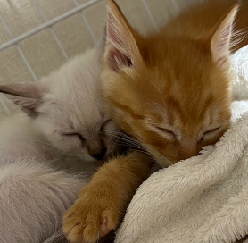

About
-私について-
なまえ
たかはし なほ
2005年5月28日生まれ。岩手県出身
パソコンと音楽が大好きなマイペースに生きていく人
最近熱中していることは猫を愛でることと映画鑑賞をすること
バースデーカラーはオールドゴールド(今回の文字色にしました)
MBTIはINFJ(提唱者)
好きな場所は緑がいっぱいなところと落ち着く静かなところです
幼少期
2005年5月に生まれる。
長女であるからか真面目でマイペースな性格だよねとよく言われる。
人見知りな性格で自分からあまり前に出るタイプではなかった。
音楽をかけるとノリノリになったらしい。
小学生
小学校入学時、人見知りだった私が卒業までの間に大きく成長する。
この頃から誰かの役に立ちたい想いが強く、
小学・中学で何度か学級委員を務める。
9歳の頃からパソコンに初めて触れる。始めは動画を見たり、調べ物をした事がきっかけ。
高学年になると本格的にパソコンに熱中。時間があればひたすら触っていた。
(写真右上は2025年春に私がスマホで撮った夜桜、右下は同じく夏に撮ったラベンダー畑)
中学生
中学に入学すると、合唱部に入部。
パソコンと同じくらい合唱が好きでこれしかないと確信。
特に印象に残っているのは、外部講師を招いたホールでの合唱練習だ。
1年生の時は過酷だと思ったが、友達と先輩の
いつもと違う真剣な姿勢に感化され私も負けていられないなと火が付いた。
ずっとその場に立って練習するため姿勢が鍛えられ、姿勢がいいねと言われた時は嬉しかった。
3年間仲間とともに合唱を楽しむ。一日一日がかけがえのない日々だった。
コンクールに向けて毎日練習し仲間と一つの音楽をつくる事が楽しくてとても充実した3年間だった。
この頃にプログラミングを知る。第一印象は、なんだか難しそう。
受験生になり志望校を決める時、私は何を目指したいのか、何に興味があるのか深く考えた。
高校に行っても合唱を続けたいと言う者たちもいたが、私は合唱を続けることを考えておらず、
自分の興味のあるもの、将来の仕事に生かせる学校に行きたいと考えていた。
最終的な想いが「大好きなパソコンを学べる学校に行きたい」だった。
高校生
高校入学。情報や会計、幅広く学べる商業高校に入学。パソコン、簿記など広い分野を学ぶ。
授業の大半がパソコンに触れるので私にとって最高の環境だった。簿記を学び、経理の凄さを知った。
高1の冬、幼い頃からずっと目標にしていた実用英検準二級を独学で合格することができた。
苦労した事も沢山あったが、あの時の喜びと達成感は今でも忘れない。
英検に挑戦したことで自然と努力する力、自分を強くする誇りに代わった。
この先の資格取得に向けて、受ける際の原動力や確かな希望と自信に繋がった。英検を受けて本当に良かった。
私が通っていた高校は就職率が非常に高い学校で、それに生かすための検定、資格が沢山取得できる学校だ。
様々な教養を受けることができた為多くの経験が自分を礼儀正しく前向きにさせた。
特に試験が近くなると、勉強強化月間ということで放課後みんなでひたすら問題を解く時間があり、
授業や学校生活では礼儀作法を普段から厳しくも今も自身の軸になるような教えをしっかり身をもって教わりました。
部活動では地域での商品販売・新商品の開発、ボランティア活動、資格勉強を活動のメインとする部活動に入部。
活動日は基本週4の、ほとんど毎日で、イベントがある際は土・日曜日も活動。
一番印象に残っているのは地域での販売活動で私たち高校生が商品開発をした商品を販売した際に
地域の方々をはじめとする子どもからご年配の方、卒業生の方々、遠方からいらした方など沢山の方々が
商品を購入するために訪れてくださったあの光景はしっかり覚えている。
部活動の場で積み重ねた接客マナーや、お金の管理の仕方、協調性をこれからも大事に過ごしたい。
また時は過ぎ、いよいよ進路を決める時期がやってきた。就職希望の私は学校に来た沢山の求人票を見ながら、
私はこのまま就職していいのか、誰かの役に本当に立てるだろうか、様々な悩みで頭を巡らせた。
迷える私はある日偶然、進学する人向けの講演会にて進学の素晴らしさを聴きました。
それから私自身大きく変化し、新しいことを学ぶのが好きな私は進学した方が
かつての自分の夢と想いが叶うのではないか、将来の道がより広がるのではないかと考えた。
高3の夏休み前は就職希望だったが、ITを勉強したい、技術を身に着けてから就職したいという想いが強くなり、
夏休み後すぐに担任に相談、急な進路変更を経て、専門的な知識を学べるITの専門学校へ受験を決めました。